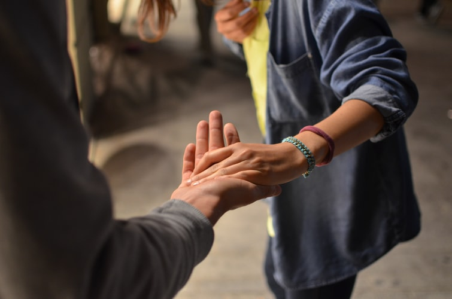

Our Mission

"The opposite of addiction is not sobriety, it's connection."
One of the most important aspects of healing from drug abuse is one's support network.
And one of the most important aspects of preventing drug abuse is looking at it closely and understanding all its facets.
What better way to do this than through the people who have come the closest to it and lived to tell the story?
Here you can:
- Read the stories of the people who survived drug abuse
- Chat with survivors about how they managed to heal
- Have direct contact with professional help
- Join support groups
- Share your own story as a survivor of drug abuse
If you've been through it, TELL ME so I can better understand.
If you want to learn, JOIN ME in listening.
1232
People helped
64
Stories
42
Psychotherapists
15
Social workers